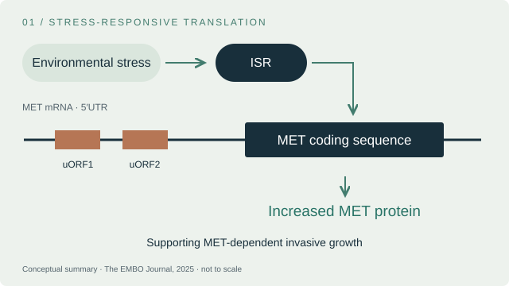
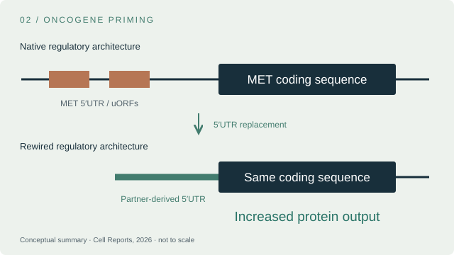
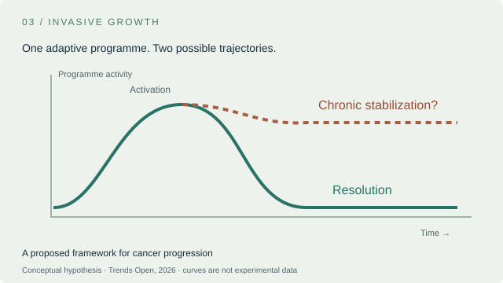
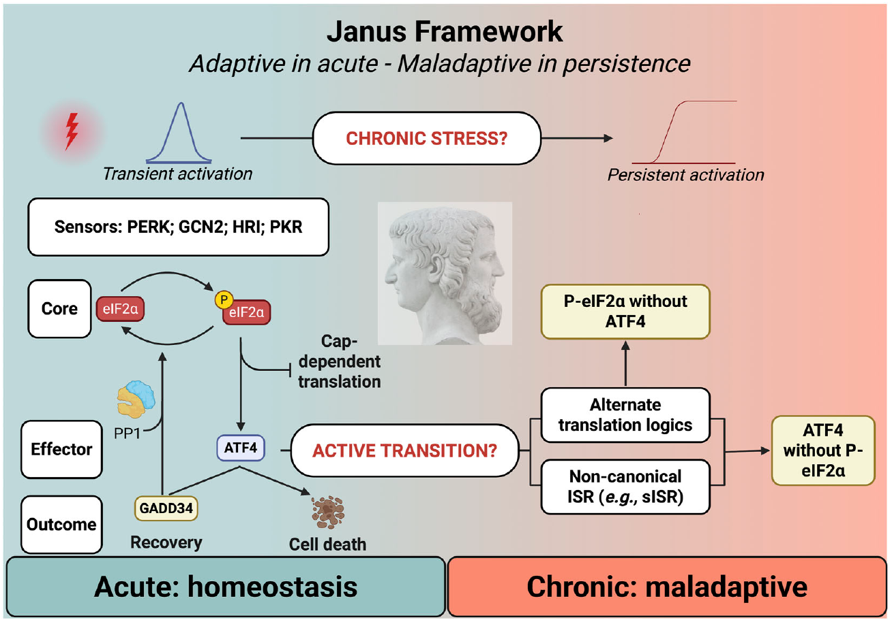

The EMBO Journal · 2025

Stress can drive
MET translation.
Connecting the integrated stress response to MET-dependent invasive growth.
Molecular biology · Cancer adaptation
I study how translational control shapes cancer adaptation — connecting stress-responsive MET expression, oncogene priming and the persistence of invasive growth.
Environmental stress
Stress-responsive MET translationOncogene priming
Rewiring the 5′ untranslated regionPersistent invasive growth?
A framework for the next questionsSelected discoveries / 2025—2026
Mechanisms at a glance. Redrawn conceptual summaries; see each paper for experimental evidence.
The EMBO Journal · 2025

Connecting the integrated stress response to MET-dependent invasive growth.
Cell Reports · 2026

Oncogenic fusions can alter translational regulation while preserving protein structure.
Trends Open · 2026 / Opinion

A framework for cancer as the chronic stabilization of invasive growth.
Life Science Alliance · 2026 / Review
When does a protective stress response become a persistent, disease-associated state? The Janus framework connects the molecular discoveries to this broader question.
Explore Janus and the original figure →
The researcher behind the questions
My work connects molecular mechanisms with a broader question: how does a temporary response become a lasting cellular state?
Explore my scientific trajectory, recent publications and the direction of my proposed independent research programme.
The next chapter / Proposed independent programme
SATURN
SATURN extends these research questions toward the persistence of adaptive cellular states: how they begin, what sustains them, and whether they can resolve.
Proposed research programme · funding not confirmed.
Scientific discussion & opportunities
I welcome conversations about translational control, oncogene regulation and persistent adaptive states.
Get in touch ↗The people & support behind the work
Science grows through shared questions, complementary expertise and collective effort. I am grateful to the colleagues, research platforms and funders who contributed to the work presented here.
With thanks to the IFOM Cell Biology and Imaging Units, and the Cogentech teams providing genome editing, sequencing, quantitative PCR and genomics support.
I am also grateful to all the collaborators and colleagues whose expertise, discussions and generosity have contributed to this work.